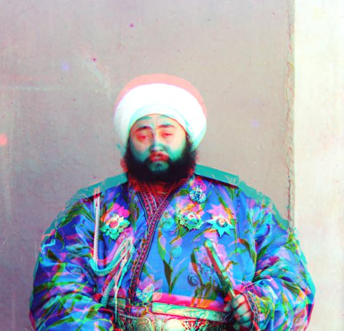
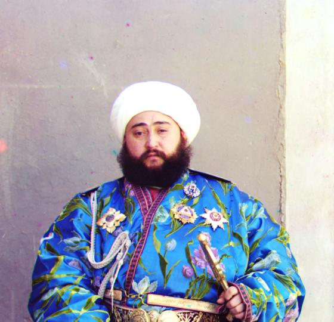
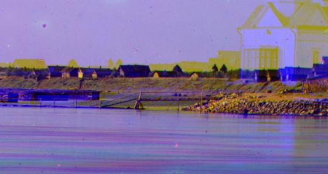
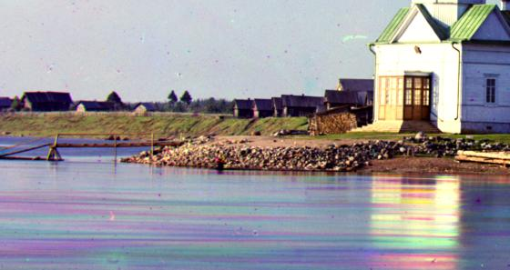
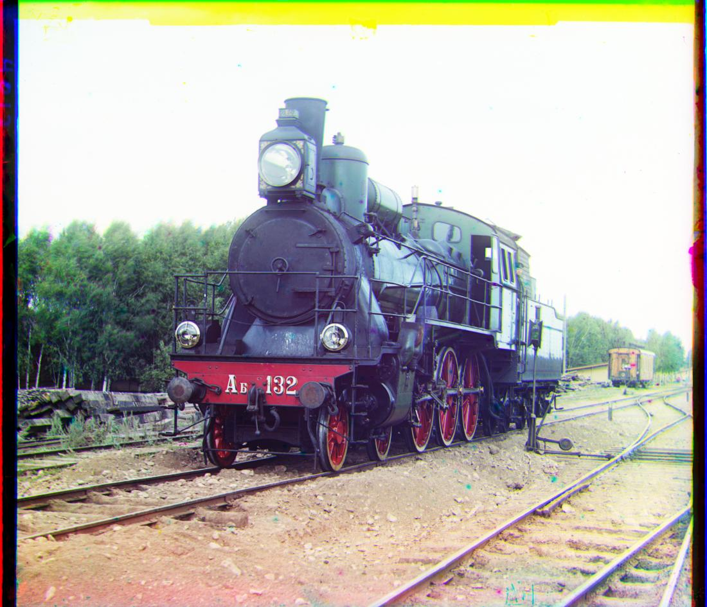
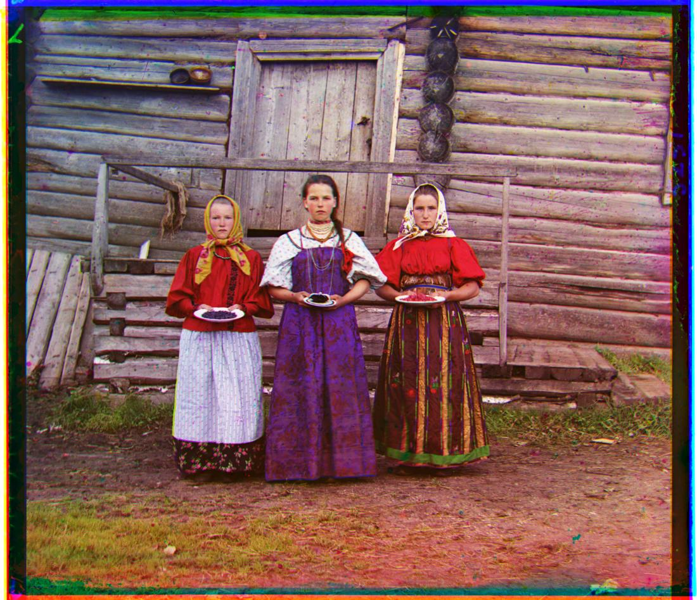
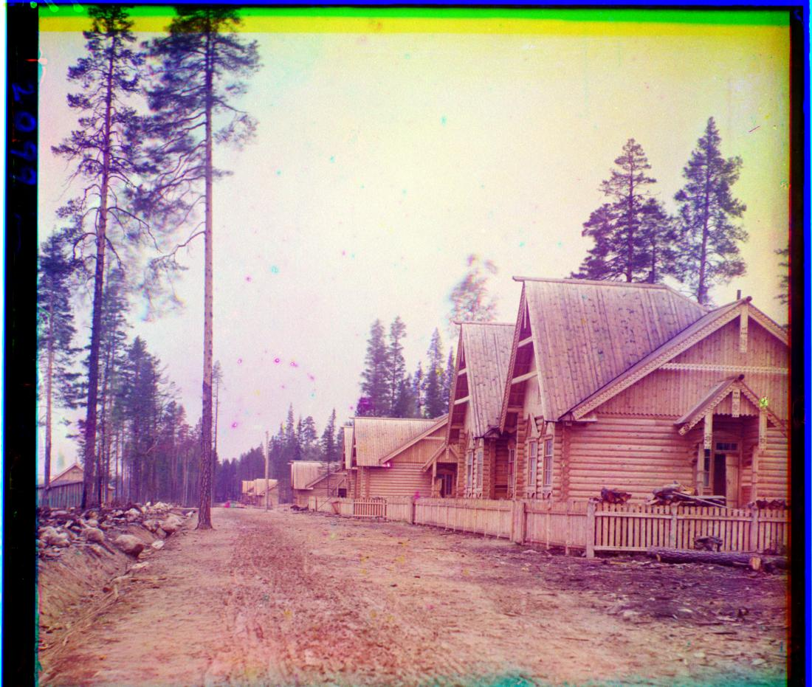
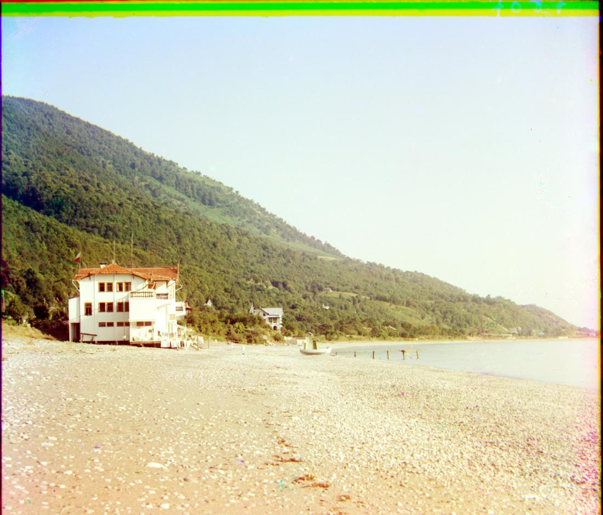

Images of the Russian Empire
OverviewWhat we're starting from
Around 1907, a photographer named Prokudin-Gorskii figured out a way to take color photos before color film existed: shoot the same scene three times through a blue, a green, and a red filter, and let a projector recombine them later. The Library of Congress has since scanned his glass plates, and each scan is one tall grayscale image holding all three of those exposures, one behind a blue filter, one green, one red, stacked B/G/R top to bottom.
Turning that back into a real color photo means cutting the plate into thirds and shifting the green and red pieces until they line up with the blue one. The only move allowed is a plain (x, y) translation, no rotating or scaling.
Part 1Scoring a candidate alignment
First problem: before you can search for the right shift, you need a way to tell whether any given shift is good or bad. So the whole thing starts with a scoring function. To find the right offset I score every candidate shift and keep whichever scores best. The simplest score is the L2 norm (Euclidean distance) between the two overlapping patches:
def euclidean_distance(im1, im2):
return np.sqrt(np.sum((im1 - im2) ** 2))
Lower score means a better match, 0 is perfect. The other metric people usually bring up is normalized cross-correlation (NCC): mean-subtract both patches, scale each to unit length, take the dot product.
def normalized_cross_correlation(im1, im2):
a = im1 - np.mean(im1)
b = im2 - np.mean(im2)
return -np.sum(a * b) / (np.linalg.norm(a) * np.linalg.norm(b))
NCC is useful when two images differ by a constant brightness or gain shift, since normalizing cancels that out.
I don't actually run either metric on raw pixel brightness in my final code, though.
Instead, both align() and pyramid() run each frame through a
Sobel filter first. A Sobel filter doesn't care how bright a pixel is,
it measures how sharply brightness changes between a pixel and its neighbors, so flat
areas come out near zero and real edges, boundaries between two different things, come
out strong. Comparing those edge maps instead of raw brightness is what I actually
score.
The Emir of Bukhara photo is the clearest example of why that matters: his robe is bright blue, so it's bright in the blue channel and dark in the red one, which breaks any metric that compares raw intensity directly. Edges show up in the same place no matter how bright a region looks in a given channel, so the outline of the robe lines up fine even though the fabric itself doesn't.
Since np.roll wraps pixels around instead of dropping them, I crop a
margin off all four sides before scoring so that wrapped strip never gets counted.
Part 2Single-scale alignment
With a way to score any given shift, the next step is just searching for the best one. The simplest version is brute force: try every offset from -15 to 15 in both directions, score each one, keep the best. That's 31 × 31 = 961 candidates per channel:
def align(channel1, channel2, num1, num2, margin):
grad1 = sobel(channel1)
grad2 = sobel(channel2)
cropped2 = grad2[margin : -margin, margin : -margin]
for i in dx:
for j in dy:
row_shift = np.roll(grad1, j, axis=0)
col_shift = np.roll(row_shift, i, axis=1)
cropped1 = col_shift[margin : -margin, margin : -margin]
score = euclidean_distance(cropped1, cropped2)
For the three low-res JPEGs this is all you need, since their real offsets sit well inside ±15 pixels:
| Image | Green (x, y) | Red (x, y) |
|---|---|---|
| cathedral.jpg | (2, 5) | (3, 12) |
| monastery.jpg | (2, −3) | (2, 3) |
| tobolsk.jpg | (3, 3) | (3, 6) |
(x, y) means (horizontal, vertical): how far green or red gets moved to land on blue.
Part 3Multi-scale pyramid alignment
Problem is, the full-size plates need offsets as large as 177 pixels, way past a
±15 window. Just widening the window to ±200 would mean around 161,000
candidates scored on an 11-megapixel image, which is way too slow. So
pyramid() shrinks the image by half over and over until it's under 200
pixels tall, runs the brute-force ±15 search there, then works back up, doubling
the inherited offset each level and only checking a ±5 correction around it:
def pyramid(channel1, channel2):
if channel2.shape[0] < 200:
return align(channel1, channel2, 15, 15, margin=...)
else:
dx, dy, score = pyramid(rescale(channel1, 0.5),
rescale(channel2, 0.5))
dx *= 2
dy *= 2
col_shift = np.roll(np.roll(channel1, dy, axis=0), dx, axis=1)
corrected_dx, corrected_dy, new_score = align(col_shift, channel2, 5, 5, margin=...)
return dx + corrected_dx, dy + corrected_dy, new_score
A 3200px-tall frame needs about six halvings to get under 200px, so the total cost is one 961-candidate pass on the tiny version plus six 121-candidate passes going back up. Most of the actual work is that last pass at full resolution. This stays under a minute per image, and I use the exact same parameters for every image, no per-image tuning.
Offsets and L2 scores for all fourteen provided plates, pyramid + Sobel/L2:
| Image | Green (x, y) | L2 score | Red (x, y) | L2 score |
|---|---|---|---|---|
| cathedral.jpg | (2, 5) | 8.83 | (3, 12) | 10.73 |
| church.tif | (4, 25) | 42.44 | (−4, 58) | 41.66 |
| emir.tif | (24, 49) | 80.44 | (40, 107) | 81.18 |
| harvesters.tif | (17, 60) | 83.42 | (14, 124) | 73.62 |
| icon.tif | (17, 42) | 140.49 | (23, 90) | 128.21 |
| ilemselga.tif | (7, 40) | 48.74 | (11, 131) | 45.82 |
| melons.tif | (10, 80) | 65.70 | (13, 177) | 67.54 |
| monastery.jpg | (2, −3) | 9.29 | (2, 3) | 12.85 |
| religous_painting.tif | (6, 30) | 88.41 | (6, 70) | 83.77 |
| self_portrait.tif | (29, 78) | 83.77 | (37, 176) | 81.06 |
| siren.tif | (−6, 49) | 82.10 | (−24, 96) | 63.09 |
| three_generations.tif | (12, 53) | 62.18 | (9, 111) | 56.15 |
| tobolsk.jpg | (3, 3) | 17.46 | (3, 6) | 21.34 |
| wharf.tif | (−6, 15) | 69.00 | (−16, 83) | 75.07 |
The L2 score is just a sum over the window, so it's only meaningful within a row (green vs. red for that one image), not compared across different images.


Part 4Results with plain L2 and NCC on RGB pixel values
All of that, though, is scoring edges, not colors. Everything above uses Sobel
gradients, not raw pixels. It's worth showing what the basic L2/NCC metrics do on
their own too, so I reran the same pyramid using
euclidean_distance and normalized_cross_correlation directly
on RGB values instead, nothing else changed. "Matches" below means it landed within 3
pixels of the Sobel result above.
| Image | L2 on raw pixels | NCC on raw pixels |
|---|---|---|
| cathedral | matches | matches |
| church | off by 367 px | matches |
| emir | off by 41 px | off by 588 px |
| harvesters | matches | matches |
| icon | matches | matches |
| ilemselga | matches | matches |
| melons | matches | matches |
| monastery | matches | matches |
| religous_painting | matches | matches |
| self_portrait | matches | matches |
| siren | matches | matches |
| three_generations | matches | matches |
| tobolsk | matches | matches |
| wharf | matches | matches |
| Total | 12 / 14 | 13 / 14 |
Emir is the tricky one from way back in Part 1, and it's the only image both raw-pixel metrics fail on. Makes sense: the robe is bright in one channel and dark in the other, so comparing raw pixel values is basically comparing light to dark. NCC doesn't save it either, since it only corrects for one global brightness/gain shift, not a difference that changes per material, and it actually does worse here, landing 588px off. Church is kind of the opposite problem: plain L2 gets fooled by the big flat sky and water, which match almost as well at the wrong spot as the right one, but NCC's normalizing fixes that case fine.
The numbers above are one thing, but seeing it makes the failure obvious. Same crop, same resolution, the only difference is which offset was used to build it:




Church's raw-pixel version is 367 pixels off in both channels at once, off by enough that the church building itself isn't just blurry, it's smeared out of the frame entirely, you can't tell there was ever a building there.
Part 5Results on my own examples
All fourteen provided plates run through the same pipeline, but I wanted to try it on a few images of my own too. I downloaded four more plates as raw three-frame scans from the Library of Congress Prokudin-Gorskii Collection and ran them through the exact same code, same parameters, no per-image tuning.
| Plate | Green (x, y) | L2 score | Red (x, y) | L2 score |
|---|---|---|---|---|
| LC-DIG-prok-00458 | (2, 42) | 95.14 | (29, 85) | 80.85 |
| LC-DIG-prok-01043 | (9, −14) | 100.34 | (16, 12) | 93.28 |
| LC-DIG-prok-00307 | (19, 17) | 70.60 | (38, 86) | 63.33 |
| LC-DIG-prok-01554 | (−1, 80) | 56.68 | (−10, 163) | 63.66 |

LC-DIG-prok-00458 · G (2, 42) · R (29, 85)

LC-DIG-prok-01043 · G (9, −14) · R (16, 12)

LC-DIG-prok-00307 · G (19, 17) · R (38, 86)

LC-DIG-prok-01554 · G (−1, 80) · R (−10, 163)
Part 6Alignment failures
Last thing to check: did anything actually fail? None of the 18 images (14 provided + 4 of my own) did. Every one landed within a few pixels of where it should, close enough that you can't see it in the final photo.